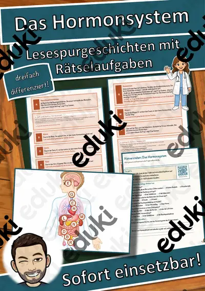
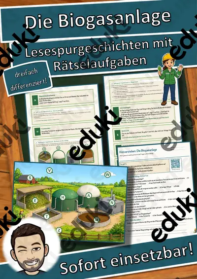
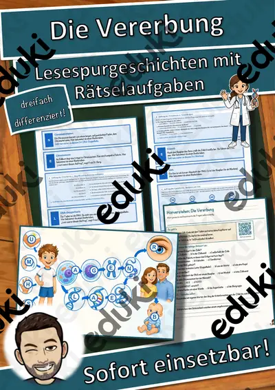
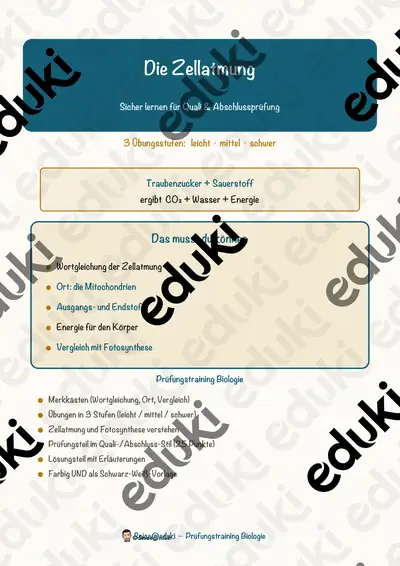
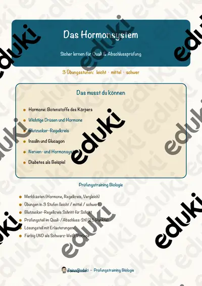
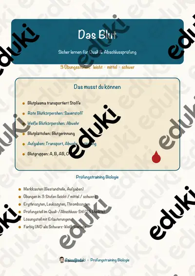
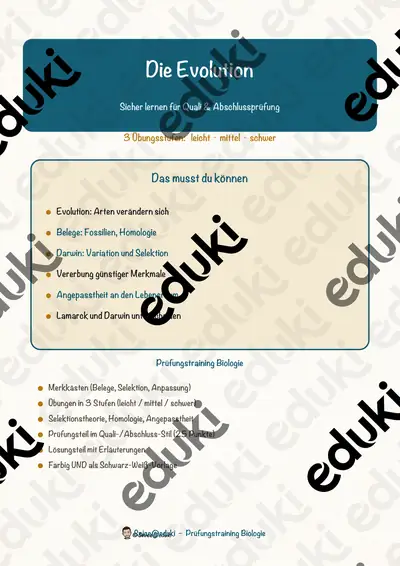

Die DNA – Lesespurgeschichte mit Rätselaufgaben (Klasse 9)

Der Zellkern – Lesespurgeschichte mit Rätselaufgaben (Klasse 9)

Das Mitochondrium – Lesespurgeschichte mit Rätselaufgaben (Klasse 9)

Das Rückenmark – Lesespurgeschichte mit Rätselaufgaben (Klasse 9)

Die Bestäubung – Lesespurgeschichte mit Rätselaufgaben (Klasse 9)

Das Nervensystem – Lesespurgeschichte mit Rätselaufgaben (Klasse 9)

Das Lymphsystem – Lesespurgeschichte mit Rätselaufgaben (Klasse 9)

Reiz und Reaktion – Lesespurgeschichte mit Rätselaufgaben (Klasse 9)

Das Hormonsystem – Lesespurgeschichte mit Rätselaufgaben (Klasse 9)

Die Biogasanlage – Lesespurgeschichte mit Rätselaufgaben (Klasse 9)

Die Leber – Lesespurgeschichte mit Rätselaufgaben (Klasse 9)

Das Gehirn – Lesespurgeschichte mit Rätselaufgaben (Klasse 9)

Die Nervenzelle – Lesespurgeschichte mit Rätselaufgaben (Klasse 9)

Die Vererbung – Lesespurgeschichte mit Rätselaufgaben (Klasse 9)

Die Arztpraxis – Ein Praktikum beim Arzt – Lesespurgeschichte mit Rätselaufgaben (Klasse 9)

Die Vererbung – Prüfungstraining Biologie (Klasse 9)
Das Immunsystem – Prüfungstraining Biologie (Klasse 9)

Die Zellatmung – Prüfungstraining Biologie (Klasse 9)

Das Hormonsystem – Prüfungstraining Biologie (Klasse 9)

Das Blut – Prüfungstraining Biologie (Klasse 9)

Die Evolution – Prüfungstraining Biologie (Klasse 9)

Weimarer Klassik (Literatur) Lückentext mit Wortspeicher Hörverstehen und Suchsel

Sturm und Drang (Literatur) Lückentext mit Wortspeicher Hörverstehen und Suchsel

02-10 Welttag der Hülsenfrüchte

Homeschooling Materialpaket (wachsend) (auch Homeschooling)

Homeschooling Materialpaket (auch Homeschooling) Coronavirus (wachsend) - Materialpaket

Was ist ein Pandemieplan? - Homeschooling
Keine Materialien gefunden – versuch einen anderen Suchbegriff oder Filter.